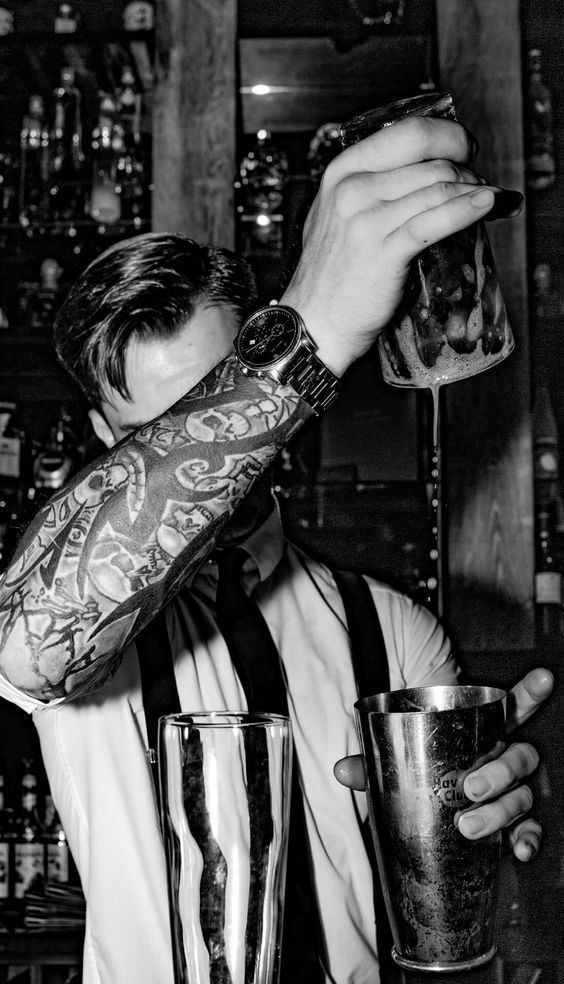
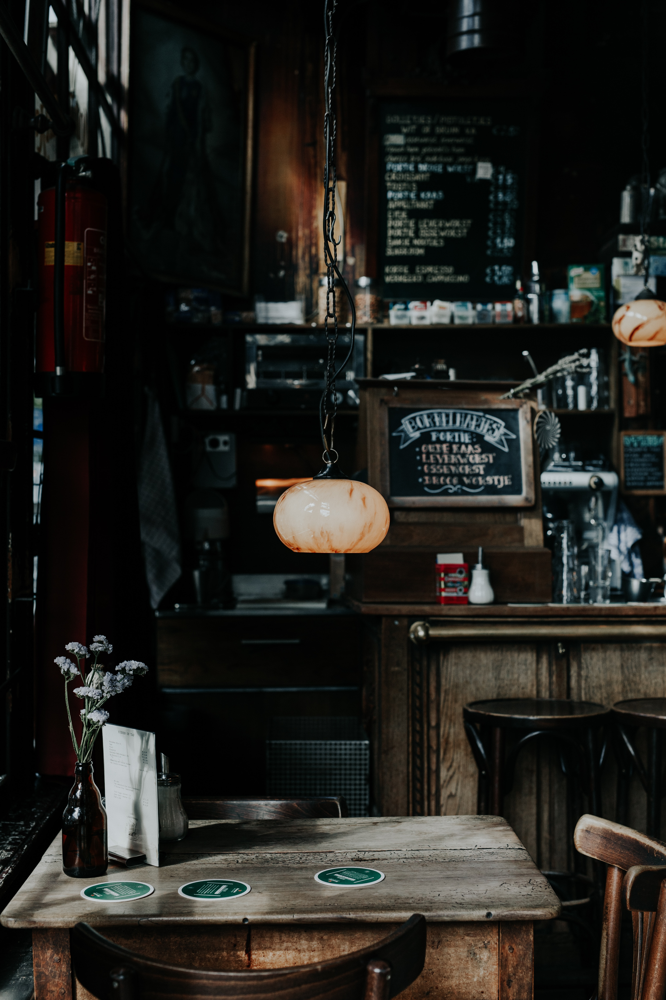

-

BARTENDERES
- Nuestros Bartenderes cuentan con profesionalismo y dedicacion.
- Administra la barra , hace inventarios y suministra lo que haga falta.
- Mantienen el espacio del bar limpio, ordenado y seguro.
- Preparan y sirven bebidas alcoholicas y no alcoholicas.
-

AMBIENTE
Ambiente calido, amplio espacio de recreacion, con gran cantidad de tragos y cervezas artesanales.
-

TRAGOS
Gran variedad de cocteles y tragos de autor.
-

CERVEZAS
Todas las canillas te esperan. Cerveza Cartago Lather, Cerveza Artesanal Argentina, "Comunidad Cervecera" Alma Mater - Cerveza Artesanal Happy Hour hasta las 21 hs.